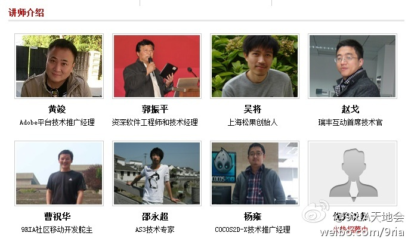
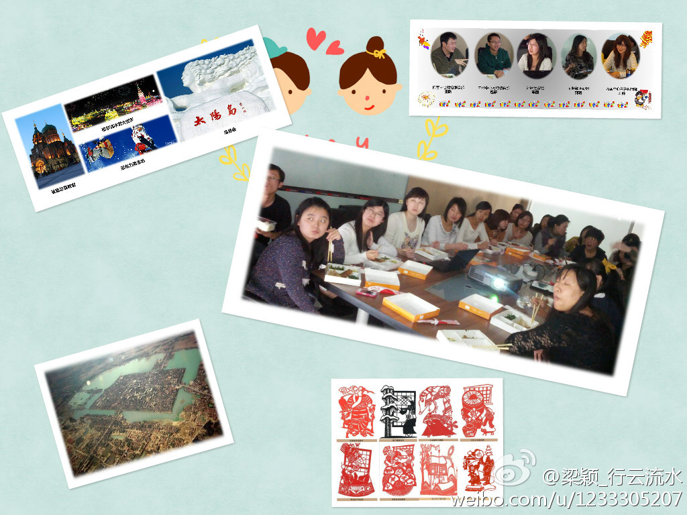

帮转。@9ria游戏开发者社区:2013#RIA天地行#将于3月17日在上海正式开启！本年度"RIA天地行"将继续秉承"百花齐放，百家争鸣"的原则，聚集行业热点话题，推动技术不断创新，邀请国内外知名技术专家为大家登台讲解。上海开发者们的福音！@Peter-黄竣 @赵客观天 @Adobe中国技术社区 @田爱娜 @游戏开发极客 网页链接 
梁颖记录，必是精品啊。@梁颖_木水辰:CSDN社区运营午餐会回来啦！新年后第1期（总第7期）“聊聊全国的过年风俗”。 你的家乡有着怎样的年俗？今年春节你在哪里度过的？一起晒晒家乡的年俗吧。首先一起来看看，河南、内蒙、山西、东北的人们是怎样庆祝新年的。精彩图片尽情点击网页链接 @Ada李力 @Adela可爱多 @魏秃驴 
活动地址离@Adela可爱多 的住处很近。//@Justin麒麟: 真巧，@北京时间管理沙龙 在这周日也是讲传统文化和旅行，其中也有我的分享，Ada姐来不网页链接//@Ada李力: 梁颖记录，必是精品啊。@梁颖_木水辰:CSDN社区运营午餐会回来啦！新年后第1期（总第7期）“聊聊全国的过年风俗”。 你的家乡有着怎样的年俗？今年春节你在哪里度过的？一起晒晒家乡的年俗吧。首先一起来看看，河南、内蒙、山西、东北的人们是怎样庆祝新年的。精彩图片尽情点击网页链接 @Ada李力 @Adela可爱多 @魏秃驴
又一例法律部门干的蠢事儿。但从法律部门角度讲，它还必须干点儿事儿让公司认为没白养它们。 //@SeqWorks: 每天骚扰百度客服然后说如果不想被骚扰请设置自动电话应答拒绝骚扰 如有问题参看电话设置说明书 //@Fenng:威武了...---:抱歉，作者已设置仅展示半年内微博，此微博已不可见。
程总推荐几个愿意找程序猿的美女？@程时旭:刚才教训一个美女，还是找程序猿，程序猿最靠谱，千万不要找销售，帅锅销售Pipelines一堆堆，想和他上床的美女排成排。一分耕耘一分收获，帅锅程序猿最靠谱，追一个月，帅锅程序猿愿意为你死，天下的美女你懂么？
即使不赚钱，还是有很多人很想开咖啡馆啊。@imlifang@中创盟:【2013年会是创业咖啡馆倒闭潮的开始吗？】年前动点科技做了个创业主题咖啡馆的系列报道，几乎所有的咖啡馆均未盈利。换句话说，开创业咖啡馆是个不赚钱的生意。不赚钱的生意可以做多久，一年？两年？2013年会是创业咖啡馆倒闭潮的开始吗？详见：网页链接 via@动点科技 @卢刚 @牛小千

 网页链接
网页链接